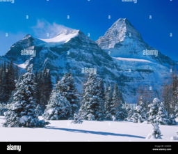
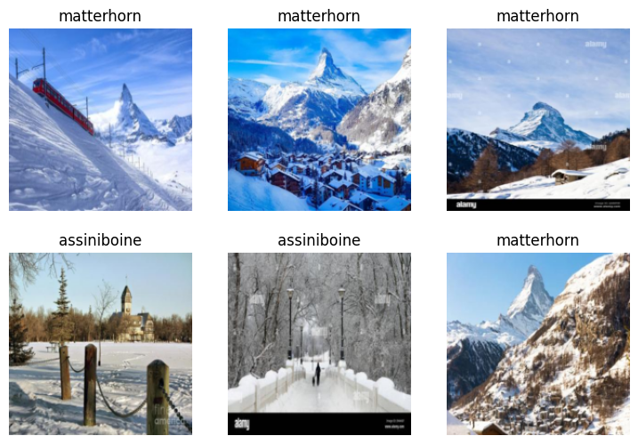

from ddgs import DDGS
from fastcore.all import *
def search_images(keywords, max_images=200): return L(DDGS().images(keywords, max_results=max_images)).itemgot('image')
import time, jsonMountain classifier
Matterhorn vs Assiniboine (“Matterhorn of the Rockies”)
from fastdownload import download_url
from fastai.vision.all import *
download_url(search_images('matterhorn in winter', max_images=1)[0], 'matterhorn.jpg', show_progress=False)
Image.open('matterhorn.jpg').to_thumb(256,256)
download_url(search_images('assiniboine in winter', max_images=1)[0], 'assiniboine.jpg', show_progress=False)
Image.open('assiniboine.jpg').to_thumb(256,256)
searches = 'matterhorn','assiniboine'
path = Path('matterhorn_or_not')
for o in searches:
dest = (path/o)
dest.mkdir(exist_ok=True, parents=True)
download_images(dest, urls=search_images(f'{o} in winter'))
time.sleep(5)
resize_images(path/o, max_size=400, dest=path/o)failed = verify_images(get_image_files(path))
failed.map(Path.unlink)
len(failed)0dls = DataBlock(
blocks=(ImageBlock, CategoryBlock),
get_items=get_image_files,
splitter=RandomSplitter(valid_pct=0.2, seed=42),
get_y=parent_label,
item_tfms=[Resize(192, method='squish')]
).dataloaders(path, bs=32)
dls.show_batch(max_n=6)
learn = vision_learner(dls, resnet18, metrics=error_rate)
learn.fine_tune(5)Downloading: "https://download.pytorch.org/models/resnet18-f37072fd.pth" to /root/.cache/torch/hub/checkpoints/resnet18-f37072fd.pth100%|██████████| 44.7M/44.7M [00:00<00:00, 113MB/s]| epoch | train_loss | valid_loss | error_rate | time |
|---|---|---|---|---|
| 0 | 0.992223 | 1.174857 | 0.411765 | 00:20 |
20.00% [1/5 00:32<02:08]
| epoch | train_loss | valid_loss | error_rate | time |
|---|---|---|---|---|
| 0 | 0.388923 | 0.677145 | 0.352941 | 00:32 |
0.00% [0/2 00:00<?]
--------------------------------------------------------------------------- KeyboardInterrupt Traceback (most recent call last) /tmp/ipython-input-2674562609.py in <cell line: 0>() 1 learn = vision_learner(dls, resnet18, metrics=error_rate) ----> 2 learn.fine_tune(5) /usr/local/lib/python3.12/dist-packages/fastai/callback/schedule.py in fine_tune(self, epochs, base_lr, freeze_epochs, lr_mult, pct_start, div, **kwargs) 168 base_lr /= 2 169 self.unfreeze() --> 170 self.fit_one_cycle(epochs, slice(base_lr/lr_mult, base_lr), pct_start=pct_start, div=div, **kwargs) 171 172 # %% ../../nbs/14_callback.schedule.ipynb 67 /usr/local/lib/python3.12/dist-packages/fastai/callback/schedule.py in fit_one_cycle(self, n_epoch, lr_max, div, div_final, pct_start, wd, moms, cbs, reset_opt, start_epoch) 119 scheds = {'lr': combined_cos(pct_start, lr_max/div, lr_max, lr_max/div_final), 120 'mom': combined_cos(pct_start, *(self.moms if moms is None else moms))} --> 121 self.fit(n_epoch, cbs=ParamScheduler(scheds)+L(cbs), reset_opt=reset_opt, wd=wd, start_epoch=start_epoch) 122 123 # %% ../../nbs/14_callback.schedule.ipynb 50 /usr/local/lib/python3.12/dist-packages/fastai/learner.py in fit(self, n_epoch, lr, wd, cbs, reset_opt, start_epoch) 270 self.opt.set_hypers(lr=self.lr if lr is None else lr) 271 self.n_epoch = n_epoch --> 272 self._with_events(self._do_fit, 'fit', CancelFitException, self._end_cleanup) 273 274 def _end_cleanup(self): self.dl,self.xb,self.yb,self.pred,self.loss = None,(None,),(None,),None,None /usr/local/lib/python3.12/dist-packages/fastai/learner.py in _with_events(self, f, event_type, ex, final) 205 206 def _with_events(self, f, event_type, ex, final=noop): --> 207 try: self(f'before_{event_type}'); f() 208 except ex: self(f'after_cancel_{event_type}') 209 self(f'after_{event_type}'); final() /usr/local/lib/python3.12/dist-packages/fastai/learner.py in _do_fit(self) 259 for epoch in range(self.n_epoch): 260 self.epoch=epoch --> 261 self._with_events(self._do_epoch, 'epoch', CancelEpochException) 262 263 def fit(self, n_epoch, lr=None, wd=None, cbs=None, reset_opt=False, start_epoch=0): /usr/local/lib/python3.12/dist-packages/fastai/learner.py in _with_events(self, f, event_type, ex, final) 205 206 def _with_events(self, f, event_type, ex, final=noop): --> 207 try: self(f'before_{event_type}'); f() 208 except ex: self(f'after_cancel_{event_type}') 209 self(f'after_{event_type}'); final() /usr/local/lib/python3.12/dist-packages/fastai/learner.py in _do_epoch(self) 254 def _do_epoch(self): 255 self._do_epoch_train() --> 256 self._do_epoch_validate() 257 258 def _do_fit(self): /usr/local/lib/python3.12/dist-packages/fastai/learner.py in _do_epoch_validate(self, ds_idx, dl) 250 if dl is None: dl = self.dls[ds_idx] 251 self.dl = dl --> 252 with torch.no_grad(): self._with_events(self.all_batches, 'validate', CancelValidException) 253 254 def _do_epoch(self): /usr/local/lib/python3.12/dist-packages/fastai/learner.py in _with_events(self, f, event_type, ex, final) 205 206 def _with_events(self, f, event_type, ex, final=noop): --> 207 try: self(f'before_{event_type}'); f() 208 except ex: self(f'after_cancel_{event_type}') 209 self(f'after_{event_type}'); final() /usr/local/lib/python3.12/dist-packages/fastai/learner.py in all_batches(self) 211 def all_batches(self): 212 self.n_iter = len(self.dl) --> 213 for o in enumerate(self.dl): self.one_batch(*o) 214 215 def _backward(self): self.loss_grad.backward() /usr/local/lib/python3.12/dist-packages/fastai/learner.py in one_batch(self, i, b) 241 b = self._set_device(b) 242 self._split(b) --> 243 self._with_events(self._do_one_batch, 'batch', CancelBatchException) 244 245 def _do_epoch_train(self): /usr/local/lib/python3.12/dist-packages/fastai/learner.py in _with_events(self, f, event_type, ex, final) 205 206 def _with_events(self, f, event_type, ex, final=noop): --> 207 try: self(f'before_{event_type}'); f() 208 except ex: self(f'after_cancel_{event_type}') 209 self(f'after_{event_type}'); final() /usr/local/lib/python3.12/dist-packages/fastai/learner.py in _do_one_batch(self) 222 223 def _do_one_batch(self): --> 224 self.pred = self.model(*self.xb) 225 self('after_pred') 226 if len(self.yb): /usr/local/lib/python3.12/dist-packages/torch/nn/modules/module.py in _wrapped_call_impl(self, *args, **kwargs) 1771 return self._compiled_call_impl(*args, **kwargs) # type: ignore[misc] 1772 else: -> 1773 return self._call_impl(*args, **kwargs) 1774 1775 # torchrec tests the code consistency with the following code /usr/local/lib/python3.12/dist-packages/torch/nn/modules/module.py in _call_impl(self, *args, **kwargs) 1782 or _global_backward_pre_hooks or _global_backward_hooks 1783 or _global_forward_hooks or _global_forward_pre_hooks): -> 1784 return forward_call(*args, **kwargs) 1785 1786 result = None /usr/local/lib/python3.12/dist-packages/torch/nn/modules/container.py in forward(self, input) 242 def forward(self, input): 243 for module in self: --> 244 input = module(input) 245 return input 246 /usr/local/lib/python3.12/dist-packages/torch/nn/modules/module.py in _wrapped_call_impl(self, *args, **kwargs) 1771 return self._compiled_call_impl(*args, **kwargs) # type: ignore[misc] 1772 else: -> 1773 return self._call_impl(*args, **kwargs) 1774 1775 # torchrec tests the code consistency with the following code /usr/local/lib/python3.12/dist-packages/torch/nn/modules/module.py in _call_impl(self, *args, **kwargs) 1782 or _global_backward_pre_hooks or _global_backward_hooks 1783 or _global_forward_hooks or _global_forward_pre_hooks): -> 1784 return forward_call(*args, **kwargs) 1785 1786 result = None /usr/local/lib/python3.12/dist-packages/torch/nn/modules/container.py in forward(self, input) 242 def forward(self, input): 243 for module in self: --> 244 input = module(input) 245 return input 246 /usr/local/lib/python3.12/dist-packages/torch/nn/modules/module.py in _wrapped_call_impl(self, *args, **kwargs) 1771 return self._compiled_call_impl(*args, **kwargs) # type: ignore[misc] 1772 else: -> 1773 return self._call_impl(*args, **kwargs) 1774 1775 # torchrec tests the code consistency with the following code /usr/local/lib/python3.12/dist-packages/torch/nn/modules/module.py in _call_impl(self, *args, **kwargs) 1782 or _global_backward_pre_hooks or _global_backward_hooks 1783 or _global_forward_hooks or _global_forward_pre_hooks): -> 1784 return forward_call(*args, **kwargs) 1785 1786 result = None /usr/local/lib/python3.12/dist-packages/torch/nn/modules/container.py in forward(self, input) 242 def forward(self, input): 243 for module in self: --> 244 input = module(input) 245 return input 246 /usr/local/lib/python3.12/dist-packages/torch/nn/modules/module.py in _wrapped_call_impl(self, *args, **kwargs) 1771 return self._compiled_call_impl(*args, **kwargs) # type: ignore[misc] 1772 else: -> 1773 return self._call_impl(*args, **kwargs) 1774 1775 # torchrec tests the code consistency with the following code /usr/local/lib/python3.12/dist-packages/torch/nn/modules/module.py in _call_impl(self, *args, **kwargs) 1782 or _global_backward_pre_hooks or _global_backward_hooks 1783 or _global_forward_hooks or _global_forward_pre_hooks): -> 1784 return forward_call(*args, **kwargs) 1785 1786 result = None /usr/local/lib/python3.12/dist-packages/torchvision/models/resnet.py in forward(self, x) 94 out = self.relu(out) 95 ---> 96 out = self.conv2(out) 97 out = self.bn2(out) 98 /usr/local/lib/python3.12/dist-packages/torch/nn/modules/module.py in _wrapped_call_impl(self, *args, **kwargs) 1771 return self._compiled_call_impl(*args, **kwargs) # type: ignore[misc] 1772 else: -> 1773 return self._call_impl(*args, **kwargs) 1774 1775 # torchrec tests the code consistency with the following code /usr/local/lib/python3.12/dist-packages/torch/nn/modules/module.py in _call_impl(self, *args, **kwargs) 1782 or _global_backward_pre_hooks or _global_backward_hooks 1783 or _global_forward_hooks or _global_forward_pre_hooks): -> 1784 return forward_call(*args, **kwargs) 1785 1786 result = None /usr/local/lib/python3.12/dist-packages/torch/nn/modules/conv.py in forward(self, input) 546 547 def forward(self, input: Tensor) -> Tensor: --> 548 return self._conv_forward(input, self.weight, self.bias) 549 550 /usr/local/lib/python3.12/dist-packages/torch/nn/modules/conv.py in _conv_forward(self, input, weight, bias) 541 self.groups, 542 ) --> 543 return F.conv2d( 544 input, weight, bias, self.stride, self.padding, self.dilation, self.groups 545 ) KeyboardInterrupt:
is_matterhorn,_,probs = learn.predict(PILImage.create('matterhorn.jpg'))
print(f"This is a: {is_matterhorn}.")
print(f"Probability it's a matterhorn: {probs[1]:.4f}")is_matterhorn,_,probs = learn.predict(PILImage.create('assiniboine.jpg'))
print(f"This is a: {is_matterhorn}.")
print(f"Probability it's a assiniboine: {probs[0]:.4f}")Multi-class classification
# Add another 2 classes
searches = 'mont blanc','titlis'
path = Path('matterhorn_or_not')
for o in searches:
dest = (path/o)
dest.mkdir(exist_ok=True, parents=True)
download_images(dest, urls=search_images(f'{o} in winter'))
time.sleep(5)
resize_images(path/o, max_size=400, dest=path/o)failed = verify_images(get_image_files(path))
failed.map(Path.unlink)
len(failed)dls = DataBlock(
blocks=(ImageBlock, CategoryBlock),
get_items=get_image_files,
splitter=RandomSplitter(valid_pct=0.2, seed=42),
get_y=parent_label,
item_tfms=[Resize(192, method='squish')]
).dataloaders(path, bs=32)
dls.show_batch(max_n=12)learn = vision_learner(dls, resnet101, metrics=error_rate) #ยิ่ง model ใหญ่ยิ่งเก่ง resnet101 train 5 ครั้ง เก่งกว่า resnet50 train 10 ครั้งอีก
learn.fine_tune(5)print(f"Class names: {learn.dls.vocab}")mountain_name,_,probs = learn.predict(PILImage.create('matterhorn.jpg'))
print(f"This is a: {mountain_name}.")
print(f"Probability it's a matterhorn: {probs[1]:.4f}")mountain_name,_,probs = learn.predict(PILImage.create('assiniboine.jpg'))
print(f"This is a: {mountain_name}.")
print(f"Probability it's a assiniboine: {probs[0]:.4f}")mountain_name,_,probs = learn.predict(PILImage.create('mont blanc.jpg'))
print(f"This is a: {mountain_name}.")
print(f"Probability it's a mont blanc: {probs[2]:.4f}")mountain_name,_,probs = learn.predict(PILImage.create('titlis.jpg'))
print(f"This is a: {mountain_name}.")
print(f"Probability it's a titlis: {probs[3]:.4f}")